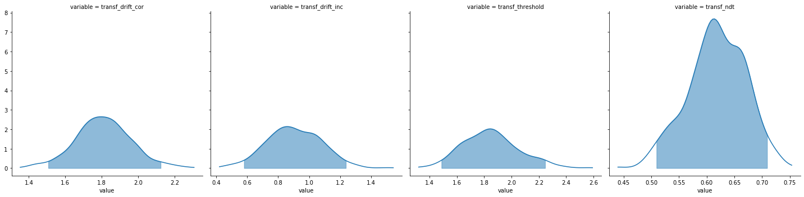

[1]:
import rlssm
import pandas as pd
import os
Import the grouped data¶
[2]:
par_path = os.path.abspath(os.path.join(os.getcwd(), os.pardir))
data_path = os.path.join(par_path, 'data/data_experiment.csv')
data = pd.read_csv(data_path, index_col=0)
data = data[data.participant == 10].reset_index(drop=True)
data['block_label'] += 1
data.head()
[2]:
| participant | block_label | trial_block | f_cor | f_inc | cor_option | inc_option | times_seen | rt | accuracy | |
|---|---|---|---|---|---|---|---|---|---|---|
| 0 | 10 | 1.0 | 1.0 | 61.0 | 52.0 | 4 | 3 | 1.0 | 1.285418 | 0.0 |
| 1 | 10 | 1.0 | 2.0 | 54.0 | 37.0 | 4 | 2 | 1.5 | 1.577622 | 0.0 |
| 2 | 10 | 1.0 | 3.0 | 51.0 | 51.0 | 4 | 3 | 2.5 | 1.564731 | 0.0 |
| 3 | 10 | 1.0 | 4.0 | 50.0 | 35.0 | 3 | 1 | 2.0 | 1.217245 | 1.0 |
| 4 | 10 | 1.0 | 5.0 | 59.0 | 50.0 | 4 | 2 | 3.0 | 1.929781 | 0.0 |
[ ]:
[3]:
model = rlssm.RDModel_2A(1, starting_point_bias=False)
---------------------------------------------------------------------------
TypeError Traceback (most recent call last)
<ipython-input-3-31d733ef4f7c> in <module>
----> 1 model = rlssm.RDModel_2A(1, starting_point_bias=False)
TypeError: __init__() got an unexpected keyword argument 'starting_point_bias'
[4]:
# sampling parameters
n_iter = 1000
n_chains = 5
n_thin = 5
# bayesian model
drift_priors = None
threshold_priors = None
ndt_priors = None
[5]:
model_fit = model.fit(
data,
drift_priors=drift_priors,
threshold_priors=threshold_priors,
ndt_priors=ndt_priors,
thin = n_thin,
iter = n_iter,
chains = n_chains)
WARNING:pystan:Maximum (flat) parameter count (1000) exceeded: skipping diagnostic tests for n_eff and Rhat.
To run all diagnostics call pystan.check_hmc_diagnostics(fit)
Checks MCMC diagnostics:
n_eff / iter looks reasonable for all parameters
0.0 of 500 iterations ended with a divergence (0.0%)
0 of 500 iterations saturated the maximum tree depth of 10 (0.0%)
E-BFMI indicated no pathological behavior
get Rhat¶
[6]:
model_fit.rhat.describe()
[6]:
| rhat | |
|---|---|
| count | 4.000000 |
| mean | 1.005565 |
| std | 0.002250 |
| min | 1.003164 |
| 25% | 1.003973 |
| 50% | 1.005532 |
| 75% | 1.007125 |
| max | 1.008033 |
[7]:
model_fit.rhat.head()
[7]:
| rhat | variable | |
|---|---|---|
| 0 | 1.003164 | drift_cor |
| 1 | 1.004242 | drift_inc |
| 2 | 1.008033 | threshold |
| 3 | 1.006822 | ndt |
get wAIC¶
[8]:
model_fit.waic
[8]:
{'lppd': -234.30298727614354,
'p_waic': 3.164286193794239,
'waic': 474.93454693987553,
'waic_se': 27.897477594290326}
Posteriors¶
[9]:
model_fit.samples
[9]:
| chain | draw | transf_drift_cor | transf_drift_inc | transf_threshold | transf_ndt | |
|---|---|---|---|---|---|---|
| 0 | 0 | 80 | 1.511521 | 0.659431 | 1.652182 | 0.662418 |
| 1 | 0 | 95 | 1.860247 | 0.754633 | 1.826745 | 0.615298 |
| 2 | 0 | 72 | 1.942867 | 0.997096 | 2.054902 | 0.559565 |
| 3 | 0 | 22 | 1.875151 | 1.050758 | 1.871815 | 0.632414 |
| 4 | 0 | 75 | 1.566996 | 0.698083 | 1.480643 | 0.710542 |
| ... | ... | ... | ... | ... | ... | ... |
| 495 | 4 | 75 | 1.462038 | 0.712358 | 1.340827 | 0.753441 |
| 496 | 4 | 80 | 1.976660 | 1.091857 | 2.179877 | 0.565816 |
| 497 | 4 | 96 | 1.713776 | 0.912719 | 1.745154 | 0.643070 |
| 498 | 4 | 39 | 1.955643 | 1.193205 | 2.221362 | 0.520565 |
| 499 | 4 | 95 | 1.777897 | 0.855215 | 1.966049 | 0.579234 |
500 rows × 6 columns
[10]:
model_fit.trial_samples
[10]:
OrderedDict([('drift_cor_t',
array([[1.51152088, 1.51152088, 1.51152088, ..., 1.51152088, 1.51152088,
1.51152088],
[1.86024663, 1.86024663, 1.86024663, ..., 1.86024663, 1.86024663,
1.86024663],
[1.94286748, 1.94286748, 1.94286748, ..., 1.94286748, 1.94286748,
1.94286748],
...,
[1.71377598, 1.71377598, 1.71377598, ..., 1.71377598, 1.71377598,
1.71377598],
[1.95564321, 1.95564321, 1.95564321, ..., 1.95564321, 1.95564321,
1.95564321],
[1.77789733, 1.77789733, 1.77789733, ..., 1.77789733, 1.77789733,
1.77789733]])),
('drift_inc_t',
array([[0.65943079, 0.65943079, 0.65943079, ..., 0.65943079, 0.65943079,
0.65943079],
[0.75463302, 0.75463302, 0.75463302, ..., 0.75463302, 0.75463302,
0.75463302],
[0.99709621, 0.99709621, 0.99709621, ..., 0.99709621, 0.99709621,
0.99709621],
...,
[0.91271879, 0.91271879, 0.91271879, ..., 0.91271879, 0.91271879,
0.91271879],
[1.19320529, 1.19320529, 1.19320529, ..., 1.19320529, 1.19320529,
1.19320529],
[0.85521475, 0.85521475, 0.85521475, ..., 0.85521475, 0.85521475,
0.85521475]])),
('threshold_t',
array([[1.65218186, 1.65218186, 1.65218186, ..., 1.65218186, 1.65218186,
1.65218186],
[1.82674457, 1.82674457, 1.82674457, ..., 1.82674457, 1.82674457,
1.82674457],
[2.05490168, 2.05490168, 2.05490168, ..., 2.05490168, 2.05490168,
2.05490168],
...,
[1.74515427, 1.74515427, 1.74515427, ..., 1.74515427, 1.74515427,
1.74515427],
[2.22136172, 2.22136172, 2.22136172, ..., 2.22136172, 2.22136172,
2.22136172],
[1.96604852, 1.96604852, 1.96604852, ..., 1.96604852, 1.96604852,
1.96604852]])),
('ndt_t',
array([[0.66241834, 0.66241834, 0.66241834, ..., 0.66241834, 0.66241834,
0.66241834],
[0.61529827, 0.61529827, 0.61529827, ..., 0.61529827, 0.61529827,
0.61529827],
[0.55956531, 0.55956531, 0.55956531, ..., 0.55956531, 0.55956531,
0.55956531],
...,
[0.64306963, 0.64306963, 0.64306963, ..., 0.64306963, 0.64306963,
0.64306963],
[0.52056529, 0.52056529, 0.52056529, ..., 0.52056529, 0.52056529,
0.52056529],
[0.57923418, 0.57923418, 0.57923418, ..., 0.57923418, 0.57923418,
0.57923418]]))])
[11]:
model_fit.plot_posteriors(height=5, show_intervals='HDI');

Posterior predictives¶
[12]:
pp_rt, pp_acc = model_fit.get_posterior_predictives(n_posterior_predictives=100)
[13]:
pp_rt
[13]:
array([[2.16341834, 1.21841834, 1.30741834, ..., 1.46341834, 1.62341834,
1.53441834],
[1.00829827, 0.89829827, 1.25129827, ..., 1.29629827, 1.86929827,
1.29729827],
[1.13056531, 1.09156531, 0.97356531, ..., 1.85856531, 1.92656531,
2.30656531],
...,
[1.63616195, 1.70816195, 1.58116195, ..., 1.47416195, 1.08716195,
1.17416195],
[1.3923641 , 2.8303641 , 1.0213641 , ..., 1.1933641 , 3.3083641 ,
1.7503641 ],
[1.43142566, 1.38142566, 1.26642566, ..., 1.00742566, 1.05842566,
1.64542566]])
[14]:
pp_acc
[14]:
array([[0., 0., 1., ..., 0., 1., 1.],
[1., 1., 1., ..., 1., 1., 0.],
[1., 1., 1., ..., 1., 1., 1.],
...,
[1., 1., 0., ..., 1., 1., 1.],
[0., 1., 1., ..., 1., 1., 1.],
[1., 1., 1., ..., 1., 1., 0.]])
[15]:
pp_summary = model_fit.get_posterior_predictives_summary(n_posterior_predictives=100)
pp_summary
[15]:
| mean_accuracy | mean_rt | skewness | quant_10_rt_incorrect | quant_30_rt_incorrect | quant_50_rt_incorrect | quant_70_rt_incorrect | quant_90_rt_incorrect | quant_10_rt_correct | quant_30_rt_correct | quant_50_rt_correct | quant_70_rt_correct | quant_90_rt_correct | |
|---|---|---|---|---|---|---|---|---|---|---|---|---|---|
| sample | |||||||||||||
| 1 | 0.719665 | 1.584900 | 1.100493 | 1.167418 | 1.397018 | 1.572418 | 1.840418 | 2.259618 | 1.049118 | 1.234118 | 1.397418 | 1.722318 | 2.208718 |
| 2 | 0.790795 | 1.506420 | 1.699050 | 1.032698 | 1.196998 | 1.378298 | 1.557498 | 1.979298 | 1.053298 | 1.246298 | 1.421298 | 1.676698 | 2.075498 |
| 3 | 0.736402 | 1.526042 | 1.125519 | 1.107165 | 1.251365 | 1.433565 | 1.681565 | 1.989965 | 1.071565 | 1.233065 | 1.429565 | 1.656065 | 2.166065 |
| 4 | 0.736402 | 1.505828 | 1.368699 | 1.088414 | 1.251814 | 1.439414 | 1.595214 | 2.221414 | 1.064414 | 1.249914 | 1.397914 | 1.585414 | 2.106914 |
| 5 | 0.694561 | 1.498224 | 1.759702 | 1.057342 | 1.208742 | 1.423542 | 1.587942 | 2.029542 | 1.062542 | 1.229542 | 1.381042 | 1.526042 | 2.286042 |
| ... | ... | ... | ... | ... | ... | ... | ... | ... | ... | ... | ... | ... | ... |
| 96 | 0.769874 | 1.514588 | 1.287075 | 1.153718 | 1.248118 | 1.379918 | 1.565318 | 2.113918 | 1.081818 | 1.238918 | 1.442918 | 1.658318 | 2.096318 |
| 97 | 0.736402 | 1.523723 | 2.033156 | 1.123179 | 1.264179 | 1.420179 | 1.657979 | 1.884779 | 1.057179 | 1.261679 | 1.430179 | 1.650679 | 2.020179 |
| 98 | 0.765690 | 1.494622 | 1.025954 | 1.095162 | 1.305662 | 1.395162 | 1.560162 | 2.004162 | 1.079762 | 1.239962 | 1.435162 | 1.656962 | 1.956162 |
| 99 | 0.648536 | 1.394908 | 1.118343 | 1.005764 | 1.113364 | 1.320864 | 1.541964 | 1.952164 | 1.017364 | 1.170164 | 1.346364 | 1.518364 | 1.789164 |
| 100 | 0.732218 | 1.474380 | 1.021837 | 1.095626 | 1.220326 | 1.358926 | 1.508326 | 1.955426 | 1.076026 | 1.255226 | 1.390426 | 1.634026 | 1.913026 |
100 rows × 13 columns
[16]:
model_fit.plot_mean_posterior_predictives(n_posterior_predictives=100, figsize=(20,8), show_intervals='HDI');

[17]:
model_fit.plot_quantiles_posterior_predictives(n_posterior_predictives=100, kind='shades');

[18]:
import numpy as np
[19]:
data['choice_pair'] = 'AB'
data.loc[(data.cor_option == 3) & (data.inc_option == 1), 'choice_pair'] = 'AC'
data.loc[(data.cor_option == 4) & (data.inc_option == 2), 'choice_pair'] = 'BD'
data.loc[(data.cor_option == 4) & (data.inc_option == 3), 'choice_pair'] = 'CD'
data['block_bins'] = pd.cut(data.trial_block, 8, labels=np.arange(1, 9))
[20]:
data.head()
[20]:
| index | participant | block_label | trial_block | f_cor | f_inc | cor_option | inc_option | times_seen | rt | accuracy | accuracy_rescale | choice_pair | block_bins | |
|---|---|---|---|---|---|---|---|---|---|---|---|---|---|---|
| 0 | 0 | 10 | 1.0 | 1.0 | 61.0 | 52.0 | 4 | 3 | 1.0 | 1.285418 | 0.0 | 2 | CD | 1 |
| 1 | 1 | 10 | 1.0 | 2.0 | 54.0 | 37.0 | 4 | 2 | 1.5 | 1.577622 | 0.0 | 2 | BD | 1 |
| 2 | 2 | 10 | 1.0 | 3.0 | 51.0 | 51.0 | 4 | 3 | 2.5 | 1.564731 | 0.0 | 2 | CD | 1 |
| 3 | 3 | 10 | 1.0 | 4.0 | 50.0 | 35.0 | 3 | 1 | 2.0 | 1.217245 | 1.0 | 1 | AC | 1 |
| 4 | 4 | 10 | 1.0 | 5.0 | 59.0 | 50.0 | 4 | 2 | 3.0 | 1.929781 | 0.0 | 2 | BD | 1 |
[21]:
model_fit.get_grouped_posterior_predictives_summary(
grouping_vars=['block_label', 'choice_pair'],
quantiles=[.3, .5, .7],
n_posterior_predictives=100)
[21]:
| mean_accuracy | mean_rt | skewness | quant_30_rt_incorrect | quant_30_rt_correct | quant_50_rt_incorrect | quant_50_rt_correct | quant_70_rt_incorrect | quant_70_rt_correct | |||
|---|---|---|---|---|---|---|---|---|---|---|---|
| block_label | choice_pair | sample | |||||||||
| 1.0 | AB | 1 | 0.80 | 1.473568 | 0.858007 | 1.293818 | 1.258418 | 1.467418 | 1.398418 | 1.705018 | 1.631418 |
| 2 | 0.80 | 1.482898 | 0.756980 | 1.276198 | 1.396798 | 1.357298 | 1.448798 | 1.506698 | 1.571798 | ||
| 3 | 0.65 | 1.441465 | 1.349635 | 1.129765 | 1.346165 | 1.246565 | 1.405565 | 1.287365 | 1.601965 | ||
| 4 | 0.50 | 1.497214 | 1.339980 | 1.210514 | 1.222814 | 1.268414 | 1.315914 | 1.599214 | 1.512914 | ||
| 5 | 0.80 | 1.494142 | 0.580790 | 1.263742 | 1.377542 | 1.479542 | 1.404542 | 1.686042 | 1.608542 | ||
| ... | ... | ... | ... | ... | ... | ... | ... | ... | ... | ... | ... |
| 3.0 | CD | 96 | 0.80 | 1.431118 | 1.317111 | 0.994118 | 1.313918 | 1.155418 | 1.477918 | 1.354818 | 1.586418 |
| 97 | 0.75 | 1.558579 | 1.496141 | 1.178179 | 1.413579 | 1.398179 | 1.539179 | 1.451779 | 1.749779 | ||
| 98 | 0.95 | 1.424412 | 2.484292 | 1.225162 | 1.260162 | 1.225162 | 1.335162 | 1.225162 | 1.493562 | ||
| 99 | 0.65 | 1.353264 | 1.842226 | 1.176964 | 1.188764 | 1.358364 | 1.226364 | 1.779964 | 1.263364 | ||
| 100 | 0.65 | 1.471176 | 1.564838 | 1.307426 | 1.330626 | 1.317426 | 1.403426 | 1.699026 | 1.492026 |
1200 rows × 9 columns
[22]:
model_fit.get_grouped_posterior_predictives_summary(
grouping_vars=['block_bins'],
quantiles=[.3, .5, .7],
n_posterior_predictives=100)
[22]:
| mean_accuracy | mean_rt | skewness | quant_30_rt_incorrect | quant_30_rt_correct | quant_50_rt_incorrect | quant_50_rt_correct | quant_70_rt_incorrect | quant_70_rt_correct | ||
|---|---|---|---|---|---|---|---|---|---|---|
| block_bins | sample | |||||||||
| 1 | 1 | 0.966667 | 1.393318 | 1.632558 | 0.958418 | 1.160018 | 0.958418 | 1.345418 | 0.958418 | 1.465218 |
| 2 | 0.800000 | 1.510665 | 0.786026 | 1.070798 | 1.350598 | 1.273798 | 1.531798 | 1.458798 | 1.673298 | |
| 3 | 0.933333 | 1.506165 | 0.661462 | 1.625165 | 1.291865 | 1.857565 | 1.416065 | 2.089965 | 1.604965 | |
| 4 | 0.766667 | 1.576914 | 1.260345 | 1.395214 | 1.333014 | 1.420414 | 1.424414 | 1.686014 | 1.596614 | |
| 5 | 0.666667 | 1.353542 | 1.061087 | 1.166042 | 1.102642 | 1.251042 | 1.390042 | 1.304842 | 1.647842 | |
| ... | ... | ... | ... | ... | ... | ... | ... | ... | ... | ... |
| 8 | 96 | 0.620690 | 1.553953 | 1.155611 | 1.166918 | 1.322718 | 1.402918 | 1.541418 | 1.478918 | 1.786918 |
| 97 | 0.655172 | 1.456455 | 1.376282 | 1.255479 | 1.219379 | 1.381179 | 1.399179 | 1.579079 | 1.490179 | |
| 98 | 0.689655 | 1.577748 | 1.666124 | 1.199362 | 1.218262 | 1.389162 | 1.369162 | 1.600562 | 1.668462 | |
| 99 | 0.724138 | 1.452123 | 1.071783 | 1.215164 | 1.144364 | 1.331364 | 1.267364 | 1.792264 | 1.536364 | |
| 100 | 0.689655 | 1.489391 | 1.050090 | 1.282826 | 1.286626 | 1.327426 | 1.475926 | 1.412026 | 1.729926 |
800 rows × 9 columns
[23]:
model_fit.plot_mean_grouped_posterior_predictives(grouping_vars=['block_bins'],
n_posterior_predictives=100,
figsize=(20,8));

[24]:
model_fit.plot_quantiles_grouped_posterior_predictives(
n_posterior_predictives=100,
grouping_var='choice_pair',
kind='shades',
quantiles=[.1, .3, .5, .7, .9]);

Get last values for eventual further sampling¶
[25]:
sv = model_fit.last_values
sv
[25]:
| chain | draw | warmup | drift_cor | drift_inc | ndt | threshold | |
|---|---|---|---|---|---|---|---|
| 99 | 0 | 99 | 0 | 1.781057 | 0.728999 | -0.314078 | 1.969399 |
| 199 | 1 | 99 | 0 | 1.626808 | 0.565102 | -0.177539 | 1.718690 |
| 299 | 2 | 99 | 0 | 1.420139 | 0.029319 | -0.052865 | 1.435712 |
| 399 | 3 | 99 | 0 | 1.838099 | 0.598794 | -0.218182 | 1.875462 |
| 499 | 4 | 99 | 0 | 1.616728 | 0.479091 | -0.253078 | 1.766643 |
[ ]: